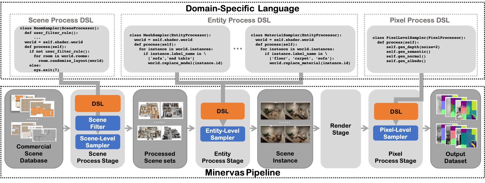
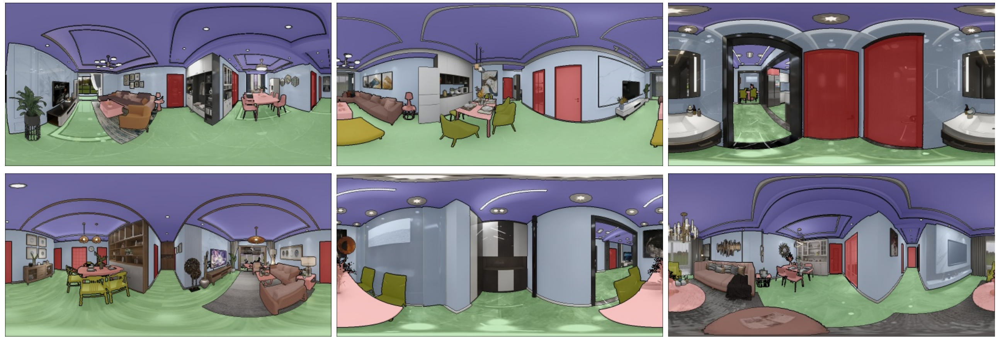
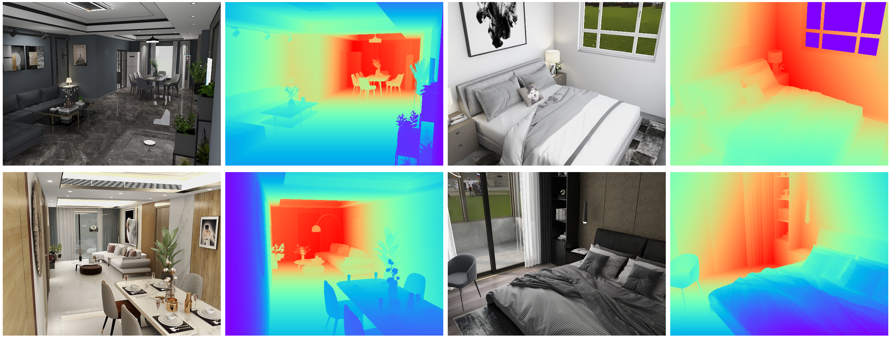

Introduction to MINERVAS
MINERVAS is a Massive INterior EnviRonments VirtuAl Synthesis system. It aims to facilitate various vision problems by providing a programmable imagery data synthesis platform.
Based on the large-scale (more than 50 million) high-quality (professional artist designed) database of Kujiale.com, MINERVAS provides a way for all users to access and manipulate them for facilitating their data-driven task.

The pipeline of MINERVAS includes the following parts:
Scene Process Stage: In this stage, users can filter scenes by their condition and re-arrange the layout of 3D scenes for domain randomization.Entity Process Stage: This Stage is designed for batch processing entities in the scene. Users can easily use entity-level samplers to randomize attributes of each entity, including furniture (e.g., CAD model, material, transformation), light (e.g., intensity, color), and camera (e.g., camera model, transformation). Modifying the attribute of each object manually is also supported.Render Stage: the system uses the generated scenes to generate 2D renderings with the photo-realistic rendering engine.Pixel Process Stage: In this stage, users can apply pixel-wise processing operations on the imagery data.
Considering the flexibility and ease of use of the system, MINERVAS provides two ways of usage: a user-friendly GUI mode and a flexible programmable mode. In the programmable mode, the pipeline is fully controlled by the Domain-Specific Language (DSL). The DSL of MINERVAS is based on Python programming languages and contains multiple useful built-in functions as we will introduce in the next chapter. Moreover, as the diversity of the data is crucial for learning-based methods, MINERVAS also supports domain randomization both in GUI mode and programmable mode.
In this documentation, we provide a DSL programming guide of MINERVAS along with some examples of vision tasks.
For more information, please visit our project page. For any problem in usage or any suggestion, please feel free to contact us minervas@qunhemail.com.
DSL Programming Guide
MINERVAS has a programmable dataset generation pipeline with Domain-Specific Language. As the main interface for users to cutomize the dataset generation for different task, we describe our DSL in this section.
Introduction to DSL of MINERVAS
The DSL (Domain-Specific Language) of MINERVAS is kind of inernal DSL, it is based on Python programming languages.
Each DSL file submitted to MINERVAS system is a Python file ended with .py.
In the Python file, users need to:
- Declare one or more classes inheriting from corresponding built-in processor class.
- Implement the cutomized operation in the
process()function.
Processor classes
There are currently four processor classes in MINERVAS system, which reflect different stages of the dataset generation pipeline.
- SceneProcessor, provides custom filtering and modifying 3D scenes in scene-level.
from ksecs.ECS.processors.scene_processor import SceneProcessor
class sceneDsl(SceneProcessor):
def process(self, *args, **kwargs):
pass
- EntityProcessor, provides custom modifying of each attributes of objects in entity-level.
from ksecs.ECS.processors.entity_processor import EntityProcessor
class entityDsl(EntityProcessor):
def process(self, *args, **kwargs):
pass
- RenderProcessor, provides customization in the rendering process.
from ksecs.ECS.processors.render_processor import RenderProcessor
class renderDsl(RenderProcessor):
def process(self, *args, **kwargs):
pass
- PixelProcessor, provides customed post-processing of rendered image results
from ksecs.ECS.processors.pixel_processor import PixelProcessor
class pixelDsl(PixelProcessor):
def process(self, *args, **kwargs):
pass
Tips: Don't forget to import the corresponding processor class from
ksces.ECS.processorsbefore use.
Attribute: shader
shader is a common attribute of all Processor classes. It is an instance of class Shader, which provides interface for accessing all 3D data assets and built-in function.
World class
The class Shader has an attribute: world.
world object is an instance of class World. The World class is an interface for a whole 3D scene in the database. It contains serveral elements:
| Attribute | Type | Description |
|---|---|---|
| instances | list of Instance | All objects (furniture) in the scene |
| lights | list of Light | All lights in the scene |
| rooms | list of Room | All rooms in the scene (whole floorplan) |
| levels | list of Level | Information for each level floors in the scene |
| trajectories | list of Trajectory | All trajectories in the scene |
| cameras | list of Camera | All exist cameras in the scene |
We will introduce each class in the following parts.
| Function | Description |
|---|---|
| delete_entity((entity)) | delete entity from the scene. |
| add_camera({attr_name}={attr_value}) | create a new camera and add it to the scene |
| tune_brightness__all_lights(ratio) | adjust the brightness of all lights in the scene(ratio: brightness adjustment multiple) |
| tune_brightness__sunlight(ratio) | adjust the multiple of natural light and turn off other light sources. (ratio: brightness adjustment multiple) |
| replace_material(id, type, category) | domain randomization for materials. See Material |
| replace_model(id) | domain randomization for models. See Model |
| add_trajectory({attr_name}={attr_value}) | create a new trajectory and add to the scene. See Trajectory |
| pick(**kwargs) | Save customized attributes as output. See example Layout Estimation. This function is encouraged to be called in StructureProcessor for robustness. |
ECS-D
Since our system supports customization to the scene, the user should easily access the scene with a suitable 3D scene representation. Thus, we employ the Entity Component System (ECS) architecture to represent and organize the 3D scene in our system. Additionally, to facilitate the randomness of scene synthesis, we integrate random distributions into the original ECS architecture, ie, attaching a distribution to depict each component. The newly proposed architecture is named as ECS-D, where D denotes distributions on components.
Scene Processor
The scene process stage takes
the scene database as input and allows users
to filter desired scenes and modify the room layout of selected scenes from the database.
Users need to implement a class inherite from SceneProcessor to control the scene process stage.
Each room is an instance of the class Room.
Based on these, users could filter scenes and modify the furniture layout of a room.
More description about Room
Scene filtering
In SceneProcessor, user can customize their rules for filtering scenes from the database. For example, the room type, the number of rooms, the number of furniture in the room, etc.
In the following, we provide a DSL code for generating scenes which have more than three rooms and has at least two bedrooms.
from ksecs.ECS.processors.scene_processor import SceneProcessor
class SceneFilterExample(SceneProcessor):
def process(self):
if len(self.shader.world.rooms) <= 3:
sys.exit(7)
bedroom_count = 0
for room in self.shader.world.rooms:
if room.type == "bedroom":
bedroom_count += 1
if bedroom_count < 2:
sys.exit(7)
Note that exit value 7 represents the exit is caused by unstatisfying scene.
For some simple filtering rules, we recommed users to use a more user-friendly GUI mode.
Room
The room's information is encapsulated as Room.
Attributes
| Attributes | Type | Description |
|---|---|---|
| roomId | str | String for identifing the room. |
| position | list | 2D coordinates of room center. |
| boundary | list | Boundary of room represented by corners in 2D coordinates. |
| name | str | The name of room. |
| area | str | The area of room. |
Domain randomization - Room Sampler
MINERVAS has a scene level sampler to generate novel furniture arrangements. Users can generate various reasonable furniture arrangements for domain randomization with this sampler.
Sampler code:
from ksecs.ECS.processors.scene_processor import SceneProcessor
class RoomSampler(SceneProcessor):
def process(self):
for room in self.shader.world.rooms:
room.randomize_layout(self.shader.world)

Level
Level contains information of different floors in the scene. The height of each level is provided.
Attributes
| Attributes | Type | Description |
|---|---|---|
| id | str | The string for identifing the level. |
| height | float | The height of the level. |
Entity Processor
The entity process stage is designed for batch processing entities in the scene set.
Users can implement an EntityProcessor to control the entity process stage.
Also, attributes (component) of each object (entity) can be manipulated in this processor, including:
Entity filtering
We filter out cameras in the room with few furniture in the following example DSL.
from ksecs.ECS.processors.entity_processor import EntityProcessor
from shapely.geometry import Point
class CameraFilterProcessor(EntityProcessor):
def process(self):
for room in self.shader.world.rooms:
polygon = room.gen_polygon()
furniture_count = 0
for ins in self.shader.world.instances:
if not ins.type == 'ASSET':
continue
if polygon.contains(Point([ins.transform[i] for i in [3, 7, 11]])):
furniture_count += 1
if furniture_count < 5: # We only use room with more than or equal to 5 assets
for camera in self.shader.world.cameras:
if polygon.contains(Point([camera.position[axis] for axis in "xyz"])):
self.shader.world.delete_entity(camera)
Camera
DSL supports the addition of three types of cameras, including:
When adding a camera, you need to set the camera's parameters, including the common parameters of all types of cameras and the unique parameters of specific types of cameras.
Attributes
| Attribute | Type | Description | Default value | Required |
|---|---|---|---|---|
| id | str | Camera ID, users need to add a prefix to ensure that the ID is unique | - | Yes |
| cameraType | str | Camera type, support PERSPECTIVE (perspective camera), ORTHO (orthogonal camera), PANORAMA (panoramic camera) | "PERSPECTIVE" | |
| position | dict | Camera coordinates, the format is {'x':1,'y':2,'z':3}, the unit is mm | - | Yes |
| lookAt | dict | Target coordinates, the format is {'x':1,'y':2,'z':3}, the unit is mm | position+{'x':1,'y':0,'z': 0} | |
| up | dict | Camera up direction, the format is {'x':1,'y':2,'z':3}, the unit is mm | {'x':0,'y':0,'z': 1} | |
| imageWidth | int | Width of the image | - | Yes |
| imageHeight | int | The height of the image | - | Yes |
| near | float | Cut plane near | 200 | |
| far | float | Cut plane far | 2000000 |
Function
| Function | Description |
|---|---|
| set_attr({attr_name}, *args, **kwargs) | Set the attributes of the camera, see the name of the camera attributes |
Get the camera and its attributes
Function Description
self.shader.world.cameras: Get the camera list of the scene
camera.{attr_name}: Get the attributes of the camera, see the name of the camera attributes.
example
class ReadCameraDsl(EntityProcessor):
def process(self):
# loop all camera
for camera in self.shader.world.cameras:
cameraType = camera.cameraType
Create/Add Camera
Function Description
self.shader.world.add_camera({attr_name}={attr_value}): create a new camera and add it to the sceneself.shader.world.create_camera({attr_name}={attr_value}): create a camera
example
class CreateCameraDsl(EntityProcessor):
def process(self):
# add camera
camera = self.shader.world.add_camera(
id="test_camera",
cameraType="PERSPECTIVE",
position={'x':0,'y':0,'z':1000},
lookAt={'x':100,'y':0,'z':1000},
imageWidth=1280,
imageHeight=720,
vfov=90
hfov=105
)
Modify camera
Function Description
camera.set_attr({attr_name}, *args, **kwargs)1: modify the attributes of the camera example
class SetCameraDsl(EntityProcessor):
def process(self):
for camera in self.shader.world.cameras:
# set camera attr
camera.set_attr('position', x=100, y=0, z=1000)
camera.set_attr('imageWidth', 1280)
camera.set_attr('hfov', 90, "degree")
*args may have multiple input parameters, in addition to the value of hfov, vfov, you can also specify the unit as "degree"/"rad"; **kwargs is used as a dictionary Type of attributes, such as position, etc.
Domain randomization - Camera Sampler
Randomize camera position and view direction for PanoramicCamera.
import numpy as np
class CameraRandomizer(EntityProcessor):
def process(self):
for camera in self.shader.world.cameras:
random_vec = np.random.normal(0, 1, size=3)
camera_pos = np.array(list(camera.position.values()))
randomized_pos = camera_pos + random_vec * np.array([500.0, 500.0, 50.0])
camera.set_attr('position', x=randomized_pos[0], y=randomized_pos[1], z=randomized_pos[2])
camera.set_attr('lookAt', z=randomized_pos[2])
PerspectiveCamera
Attributes
| Attribute | Type | Description | Default value | Required |
|---|---|---|---|---|
| id | str | Camera ID, users need to add a prefix to ensure that the ID is unique | - | Yes |
| position | dict | Camera coordinates, the format is {'x':1,'y':2,'z':3}, the unit is mm | - | Yes |
| lookAt | dict | Target coordinates, the format is {'x':1,'y':2,'z':3}, the unit is mm | position+{'x':1,'y':0,'z': 0} | |
| up | dict | Camera up direction, the format is {'x':1,'y':2,'z':3}, the unit is mm | {'x':0,'y':0,'z': 1} | |
| imageWidth | float | Width of the image | - | Yes |
| imageHeight | float | The height of the image | - | Yes |
| near | float | Cut plane near | 200 | |
| far | float | Cut plane far | 2000000 | |
| vfov | float | Vertical fov, fov in OpenGL, the angle value | - | yes |
| hfov | float | Horizontal fov, when it coexists with vfov, vfov shall prevail, the angle value | - |
OrthographicCamera
Attributes
| Attribute | Type | Description | Default value | Required |
|---|---|---|---|---|
| id | str | Camera ID, users need to add a prefix to ensure that the ID is unique | - | Yes |
| position | dict | Camera coordinates, the format is {'x':1,'y':2,'z':3}, the unit is mm | - | Yes |
| lookAt | dict | Target coordinates, the format is {'x':1,'y':2,'z':3}, the unit is mm | position+{'x':1,'y':0,'z': 0} | |
| up | dict | Camera up direction, the format is {'x':1,'y':2,'z':3}, the unit is mm | {'x':0,'y':0,'z': 1} | |
| imageWidth | float | Width of the image | - | Yes |
| imageHeight | float | The height of the image | - | Yes |
| near | float | Cut plane near | 200 | |
| far | float | Cut plane far | 2000000 | |
| orthoWidth | float | The width of the camera displayed in the model space, in millimeters | - | yes |
| orthoHeight | float | The height displayed by the camera in the model space, in millimeters | - | yes |
PanoramicCamera
Attributes
| Attribute | Type | Description | Default value | Required |
|---|---|---|---|---|
| id | str | Camera ID, users need to add a prefix to ensure that the ID is unique | - | Yes |
| position | dict | Camera coordinates, the format is {'x':1,'y':2,'z':3}, the unit is mm | - | Yes |
| lookAt | dict | Target coordinates, the format is {'x':1,'y':2,'z':3}, the unit is mm | position+{'x':1,'y':0,'z': 0} | |
| up | dict | Camera up direction, the format is {'x':1,'y':2,'z':3}, the unit is mm | {'x':0,'y':0,'z': 1} | |
| imageWidth | float | Width of the image | - | Yes |
| imageHeight | float | The height of the image | - | Yes |
| near | float | Cut plane near | 200 | |
| far | float | Cut plane far | 2000000 |
Light
DSL supports four types of lights. There are PointLight, RectangleLight, Sunlight, IESspotLight.
Attributes
| Attribute | Type | Description |
|---|---|---|
| lightType | str | PointLight, RectangleLight, SunLight, IESspotLight |
| energy | float | The intensity of light. |
| color | dict | The color of light. The format is {x": 3.4734852, "y": 6.955175, "z": 6.3826585}. It is the normalized rgb multipled by the energy. |
Access the attributes of light
example DSL:
class ReadLightDsl(EntityProcessor):
def process(self):
# loop all lights
for light in self.shader.world.lights:
position = light.position
Function
| Function | Description |
|---|---|
| set_attr({attr_name}, **kwargs) | modify light attributes. **kwargs is used for attributes of dictionary type, such as position, etc. |
| _tune_temp(delta) | Random adjust color temperature. (delta: weight for tuned color temperature) (1 - delta) * orig + delta * tuned |
| tune_random(ratio) | Random light intensity. 50% probability attenuates according to ratio, 50% probability is uniformly sampled from the interval [0.1, 0.3] to get the attenuation coefficient. |
| tune_intensity(ratio) | Set brightness attenutation. (ratio: brightness adjustment multiple) |
Modify the lighting attributes directly
example DSL:
class SetLightDsl(EntityProcessor):
def process(self):
for light in self.shader.world.lights:
# set light attr
light.set_attr('position', x=100, y=0, z=1000)
The overall light intensity adjustment of the scene
There are two built-in function of EntityProcessor which can tune intensity of all lights.
| Function | Description |
|---|---|
| tune_brightness__all_lights(ratio) | adjust the brightness of all lights in the scene(ratio: brightness adjustment multiple) |
| tune_brightness__sunlight(ratio) | adjust the multiple of natural light and turn off other light sources. (ratio: brightness adjustment multiple) |
Example of use:
class TuneLights(EntityProcessor):
def process(self, *args, **kwargs):
self.tune_brightness__all_lights(0.8)
Domain randomization - Light Sampler
Example DSL:
class LightsSampler(EntityProcessor):
def process(self, *args, **kwargs):
for light in self.shader.world.lights:
# Adjust the color temperature randomly
light._tune_temp(1)
# Adjust the light intensity randomly
light.tune_random(0.5)
# Use lower light intensity
light.tune_intensity(0.8)

PointLight
Point light radiates illumination into all directions uniformly from a point.
| Attribute | Type | Description |
|---|---|---|
| position | dict | The format is {"x": 191.20065,"y": 9078.513,"z": 69.999985} |
RectangleLight
Rectangle light is a light emitted from the rectangle shape object.
The size of rectangel light is determined by U and V vectors. The normal direction is a unit vector with the direction of cross prodcut of U and V vector.
| Attribute | Type | Description |
|---|---|---|
| directionU | dict | The format is {"x": 0.0, "y": -291.0, "z": 0.0} |
| normalDirection | dict | The format is {"x": -0.0, "y": -0.0, "z": -1.0} |
| position | dict | The format is {"x": 191.20065,"y": 9078.513,"z": 69.999985}, the unit is mm |
Sunlight
Sun light is the directional light. It radiates a specified power per unit area along a fixed direction.
| Attribute | Type | Description |
|---|---|---|
| direction | dict | The format is {"x": -0.57735026, "y": 0.57735026, "z": 0.57735026} |
IESspotLight
IESspotlight is a spotlight with measured IES profile, which can provide realistic lighting effect.
| Attribute | Type | Description |
|---|---|---|
| direction | dict | The format is {"x": -0.57735026, "y": 0.57735026, "z": 0.57735026} |
| position | dict | The format is {"x": 191.20065,"y": 9078.513,"z": 69.999985}, the unit is mm |
Instance
Each object in the scene is an Instance. User can add/delete some instance, or changing the transformation/scale for each instance.
Attributes
| Attribute | Type | Description | Default value | Required |
|---|---|---|---|---|
| id | str | Instance ID, users need to add their own prefix to ensure that the ID is unique | - | Yes |
| label | int | The label of the instance, indicating the category to which the instance belongs | - | Yes |
| transform | list | The transformation matrix of the instance, which is a list type of a 4 x 4 matrix transformed according to row first | - | Yes |
| type | str | Possible values are MESH | ASSET| COMPOSITE | - | Yes |
Function
| Function | Description |
|---|---|
| set_attr({attr_name}, *args, **kwargs) | Set the attributes of the instance, see the name of the instance attributes |
| set_rotation(rotation_list) | Set rotation of instance. rotation_list: list. 3 x 3 matrix converted according to row first list. |
| set_scale(scale_list) | Set scale of instance. scale_list: list. a list of scaling factors |
| set_position(position_list) | Set position of instance. position_list: list. a list of position coordinates. |
Get the instance and its attributes
Example
class ReadInstanceDsl(EntityProcessor):
def process(self):
# loop all instances
for instance in self.shader.world.instances:
label = instance.label
Add instance
Function Description
self.shader.world.add_instance({attr_name}={attr_value}): Create a new instance and add it to the scene
Example:
class AddInstance(EntityProcessor):
def process(self, *args, **kwargs):
ins = self.shader.world.add_instance(
id="test", label=1107, path="meshId", type="ASSET",
transform=[1.0, 0.0, 0.0, 0.0, 0.0, 1.0, 0.0, 0.0, 0.0, 0.0, 1.0, 0.0, 0.0, 0.0, 0.0, 1.0]
)
Modify instance properties
Modify the instance transformation matrix
When modifying this attribute, it is achieved by rotating, panning and zooming, and one or more of the following operations can be performed
example:
class SetInstance(EntityProcessor):
def process(self, *args, **kwargs):
for ins in self.shader.world.instances():
ins.set_position(
[0, 0, 50]
).set_rotation(
[1, 0, 0, 0, 1, 0, 0, 0, 1]
).set_scale([1, 1, 1])
Material
Material is an important component for every object in the scene. Our DSL also supports sampling new materials for each object for domain randomization.
Since the material is the core asset of the database, we only explore its index in the database and do not allow users to access the raw data.
Domain randomization - Material Sampler
MINERVAS provides replace_material method, which will provides following functionality:
REPLACE_ALL: Given aModelto randomly replace the material corresponding to each part (each part is sampled separately from the preset material library).REPLACE_BY_CATEGORY: Given aModeland the desired material category, and randomly replace the material of each part to the material of the corresponding material category. (Each part is sampled separately from the desired category of the preset material library)REPLACE_TO_GIVEN_LIST: Given aModeland the specified material id list, and randomly replace the material of each part to the material in the list.
Function parameters
| First name | Required or not | Type | Description |
|---|---|---|---|
| id | Yes | String | Identifies the Model to be modified |
| type | Yes | REPLACE_ALL | REPLACE_BY_CATEGORY | REPLACE_TO_GIVEN_LIST | replacement type |
| category | Required when type=REPLACE_BY_CATEGORY | String | Category name to be replaced. Candidate material types currently: WOOD(0L),METAL(1),STONE(2). |
| ids | Required when type=REPLACE_TO_GIVEN_LIST | List of String | ID list to be replaced |
Example
class MaterialSampler(EntityProcessor):
def process(self):
for instance in self.shader.world.instances:
# floor category_id: 1227
# sofa category_id: 1068
# carpet category_id: 1080
if instance.label in [1227, 1068, 1080]:
self.shader.world.replace_material(
id=instance.id,
type='REPLACE_ALL',
)

Model
In our system, the CAD model of each object in the scene can be easily replaced by user. The category of object remains the same for reasonable result. Since the mesh is the core asset of the database, we only explore its index in the database and do not allow users to access the raw data.
Domain randomization - Model sampler
MINERVAS provides replace_model method, which will provides following functionality:
The input the id of an Instance object and randomly replace the model of this object with a new model with the same semantic.
Function parameters
| First name | Required or not | Type | Description |
|---|---|---|---|
| id | Yes | String | Identifies the instance to be replaced |
Example
Now, we show a DSL code which randomly replace the model of sofa and table.
class MeshSampler(EntityProcessor):
def process(self):
for instance in self.shader.world.instances:
# table category_id: 1032
# sofa category_id: 1068
if instance.type == 'ASSET' and instance.label in [1032, 1068]:
self.shader.world.replace_model(id=instance.id)

Trajectory
DSL supports adding trajectory to the entity. Trajectory is an important component especially for robotic related tasks. In the MINERVAS system, users could sample a random trajectory or add a handcrafted trajectory to the camera.
There are three types of trajectories:
Attributes
| Attribute | Type | Description | Default value | Required |
|---|---|---|---|---|
| type | str | RANDOM (random trajectory); COVERAGE (bow-shape trajectory); DEFINED (user customized trajectory, usually by tapping the key frame in the scene). | - | Yes |
| pitch | float | The angle of pitch | - | Yes |
| height | float | The height of camera. The unit is mm. | - | Yes |
Get trajectory and its attributes
Function explanation
self.shader.world.trajectories: Get trajectory list in the scene.trajectory.{attr_name}: Get attributes of trajectory.
example:
from ksecs.ECS.processors.entity_processor import EntityProcessor
class ReadTrajDsl(EntityProcessor):
def process(self):
# loop all trajectories
for traj in self.shader.world.trajectories:
cameraHeight = traj.height
Add trajectory
Add Random trajectory
self.shader.world.add_trajectory({attr_name}={attr_value}): create a new trajectory and add to the scene.
example:
from ksecs.ECS.processors.entity_processor import EntityProcessor
class CreateTrajDsl(EntityProcessor):
def process(self):
for room in self.shader.world.rooms:
# Get room center
room_center_x, room_center_y = room.position
# Create trajectory of initial camera
camera = self.shader.world.create_camera(
id=room.id,
hfov=110,
vfov=125,
imageWidth=1280,
imageHeight=720,
position=[room_center_x, room_center_y, 70],
fnumber=8,
iso=100,
shutterSpeed=2
)
self.shader.world.add_trajectory(
id=room.id,
initCamera=camera,
fps=3,
speed=1500,
pitch=0,
height=70,
collisionPadding=350,
boundary=room.boundary,
type="COVERAGE"
)
Add Customized trajectory
from ksecs.ECS.processors.entity_processor import EntityProcessor
class CreateTrajDsl(EntityProcessor):
def process(self):
self.make_traj(**param)
Example
The example for customized trajectory is shown in SLAM section.
RandomTrajectory
Attributes
| Attribute | Type | Description | Default value | Required |
|---|---|---|---|---|
| pitch | float | The angle of pitch | - | Yes |
| height | float | The height of camera. The unit is mm. | - | Yes |
| initCamera | Camera | Initialize camera. Input arguments are the same as Camera. | - | Yes |
| fps | int | Frames per second | - | Yes |
| speed | float | trajectory speed (the unit is mm/s) | - | Yes |
| colisionPadding | float | The radius of collision detection | - | Yes |
| time | float | duration of time (the unit is s) | - | Yes |
CoverageTrajectory
Attributes
| Attribute | Type | Description | Default value | Required |
|---|---|---|---|---|
| pitch | float | The angle of pitch | - | Yes |
| height | float | The height of camera. The unit is mm. | - | Yes |
| initCamera | Camera | Initialize camera. Input arguments are the same as Camera. | - | Yes |
| fps | int | Frames per second | - | Yes |
| speed | float | trajectory speed (the unit is mm/s) | - | Yes |
| colisionPadding | float | The radius of collision detection | - | Yes |
| boundary | list | Restriction range of trajectory | - | Yes |
CustomizedTrajectory
Attributes
| Attribute | Type | Description | Required | Remark |
|---|---|---|---|---|
| pitch | float | The angle of pitch | Yes | |
| height | float | The height of camera. The unit is mm. | Yes | |
| imageWidth | int | The width of rendered image | Yes | |
| imageHeight | int | The height of rendered image | Yes | |
| keyPoints | list | (Key points in image space. pixel indicies: [[[[x1, y1], [x2, y2], ...]]]) | Yes | Three dimensional list. 1. list of keypoints set 2. list of pixel coordinates. 3. pixel coordinates |
| fps | int | Frames per second | - | Required if frameCount is not specified |
| speed | float | trajectory speed (the unit is mm/s) | - | Required if frameCount is not specified |
| speedMode | int | Mode for randomized speed, 0: initial randomization 1: procedual randomization | - | Required if speed is specified |
| frameCount | int | Total frame count | - | Required if fps is not specified |
| pitchMode | int | Mode of pitch randomization, 0: initial randomization, 1: procedual randomization | Yes | |
| hfow | float | Horizontal field of view (the unit is degree) | - | Required if camera type is default or 'PERSPECTIVE' |
| vfow | float | Vertical field of view (the unit is degree) | - | Required if camera type is default or 'PERSPECTIVE' |
| orthoWidth | float | horizontal field of view (the unit is mm) | - | Required if camera type is default or 'PERSPECTIVE' |
| orthoHeight | float | vertical field of view (the unit is mm) | - | Required if camera type is default or 'PERSPECTIVE' |
| heightMode | int | Mode of camera height, 0: initial randomization, 1: procedual randomization | Yes |
Render Processor
In the Render Stage, MINERVAS system uses the generated scenes to generate 2D renderings with the photo-realistic rendering engine.
Function
| Function | Description |
|---|---|
| get_rgb(distort=0, noise=0) | Rendering photo-realistic image. distort(int) represent using distortion or not when rendering. See Distortion Simulation for details. noise (int) represent adding noise or not when rendering. See Noise Simulation for details. |
Example: RGB rendering
Output format: 3 channel * 8 bit
Usage:
from ksecs.ECS.processors.render_processor import RenderProcessor
class Render(RenderProcessor):
def process(self, *args, **kwargs):
self.gen_rgb(distort=0, noise=0)
Pixel Processor
In the pixel process stage, the system modifies imagery output pixel-wisely and generates the final dataset.
Users can implement a PixelProcessor to control the pixel process stage.
Specifically, users can
- select the output information with interest. (e.g., normal map, semantic map)
- generate randomized image noise.
- add distortion to rendered image.
- visualize strucutre of room.
Function
| Function | Description |
|---|---|
| gen_normal(distort=0) | Generate normal map. (distort: int) |
| gen_instance(distort=0) | Generate intance map. (distort: int) |
| gen_semantic(distort=0) | Generate semantic map. (distort: int) |
| gen_depth(distort=0, noise=0) | Generate depth map. (distort: int, noise: int) |
| gen_traj(**params) | Generate trajectory visualization (top-down view). (params: dict: parameter list from each type of Trajectory) |
| gen_albedo(distort=0) | Generate albedo map. (distort: int) |
Output selection
In the MINERVAS system, there are several rendering output we support:
- RGB renderings
- Normal map
- Instance map
- Semantic map
- Depth map
- Trajectory map
Function list
PixelProcessor has several functions for selecting different output.
| Function | Description |
|---|---|
| gen_normal(distort=0) | Generate normal map. (distort: int) |
| gen_instance(distort=0) | Generate intance map. (distort: int) |
| gen_semantic(distort=0) | Generate semantic map. (distort: int) |
| gen_depth(distort=0, noise=0) | Generate depth map. (distort: int, noise: int) |
| gen_traj(**params) | Generate trajectory visualization (top-down view). (params: dict: parameter list from each type of Trajectory) |
| gen_albedo(distort=0) | Generate albedo map. (distort: int) |
Examples:
Normal map
Output format:
- 3 channel * 8 bit
- Suppose r, g, b represent three color channels
- [-1, 1] range of normal direction value are mapped to [0, 255]
Usage:
from ksecs.ECS.processors.pixel_processor import PixelProcessor
class NormalDsl(PixelProcessor):
def process(self, **kwargs):
self.gen_normal(distort=1)
Instance map
Output format:
- 1 channel * 16 bit
- Each pixel value represent a instance_id.
- The mapping of pixel value and instance id can be found in
instance_map.json.
- The mapping of pixel value and instance id can be found in
Usage:
from ksecs.ECS.processors.pixel_processor import PixelProcessor
class InstanceDsl(PixelProcessor):
def process(self, **kwargs):
self.gen_instance(distort=0)
Semantic map
Output format:
- 1 channel * 16 bit
- Each pixel value represents a label_id
Usage:
from ksecs.ECS.processors.pixel_processor import PixelProcessor
class SemanticDsl(PixelProcessor):
def process(self, **kwargs):
self.gen_semantic(distort=0)
Depth map
Output format:
- 1 channel * 16 bit
Usage:
from ksecs.ECS.processors.pixel_processor import PixelProcessor
class DepthDsl(PixelProcessor):
def process(self, **kwargs):
self.gen_depth(distort=0, noise=1)
Trajectory map
Visualize trajectory in the top-down view rendering result. Customized trajectory and bow-shape trajectory are currently supported.
Usage:
from ksecs.ECS.processors.render_processor import RenderProcessor
class TrajDSL(RenderProcessor):
def process(self, *args, **kwargs):
self.gen_traj(**params)
Notes: **params to be specified are in Trajectory.
Albedo map
Ouput format: 4 channel * 8 bits
from ksecs.ECS.processors.pixel_processor import PixelProcessor
class AlbedoDsl(PixelProcessor):
def process(self, **kwargs):
self.gen_albedo(distort=0)
Noise simulation
MINERVAS system supports to simulate four common image noises:
- Gaussian Noise
- Poisson Noise
- Salt and Pepper Noise
- Kinect Noise
Function
| Function | Description |
|---|---|
| add_depth_noise(img, noise_type) | img (numpy.ndarray with dtype=uint16) is the image to be processed. noise_type is an integer flag for noise type. See following list. |
0: GaussianNoiseModel
1: PoissonNoiseModel
2: SaltAndPepperNoiseModel
3: KinectNoiseModel
Distortion Simulation
MINERVAS system supports distortion simulation.
Following function has the parameter for distortion.
- get_rgb(distort=0, noise=0)
- gen_normal(distort=0, noise=0)
- gen_instance(distort=0, noise=0)
- gen_semantic(distort=0, noise=0)
- gen_depth(distort=0, noise=0)
- gen_albedo(distort=0, noise=0)
Parameter distort is an integer flag:
- 0: No distortion
- 1: Add distortion
Example
Add distortion when rendering photo-realistic image.
class AddDistortionDsl(PixelProcessor):
def process(self, **kwargs):
gen_rgb(distort=1, noise=0)
Examples
In this section, we will show serveral examples associated with corresponding DSL code, which includes:
Layout Estimation
Introduction
Layout estimiation is a challenging task in 3D vision. Several datasets are proposed to tackle this problem, including the large scale synthetic dataset Structured3D. MINERVAS system has the ability to generate dataset like Structured3D.
Here we show the DSL for generating data which helps boosting the current layout estimation task.
More details can be found in the paper and supplementary document.
DSL code
In this example, we generate both panoramic rgb images and scene structure information.
We first filter scenes with Manhattan-world assumption using ManhattanSceneFilter in the Scene Process Stage.
In the Entity Process Stage, we then remove the cameras in the relatively empty rooms using CameraFilter. Next, we set the camera parameters (\eg, camera type and image resolution) using CameraSetting.
We randomize the positions of the cameras using CameraRandomizer.
After the Rendering Process Stage, we record the positions of room corners and cameras using StructureOutput.
from ksecs.ECS.processors.scene_processor import SceneProcessor
import glm
import copy
import sys
class ManhattanSceneFilter(SceneProcessor):
def is_manhattan_scene(self):
# Check Manhattan assumption for each room
Valid = False
for room in self.shader.world.rooms:
corners = room.boundary
shift_corners = copy.deepcopy(corners)
shift_corners.append(shift_corners.pop(0))
for i in range(len(shift_corners)):
direction = glm.vec2(shift_corners[i]).xy - glm.vec2(corners[i]).xy
direction = glm.normalize(direction)
shift_corners[i] = direction
EPSILON = 0.001
MANHATTAN = True
for i in range(len(shift_corners)):
cos = glm.dot(shift_corners[i], shift_corners[(i + 1) % len(shift_corners)])
if cos > EPSILON:
MANHATTAN = False
break
if MANHATTAN:
Valid = True
return Valid
def process(self):
if not self.is_manhattan_scene():
sys.exit(7)
from ksecs.ECS.processors.entity_processor import EntityProcessor
from shapely.geometry import Point
class CameraFilter(EntityProcessor):
def is_valid_room(self, room, num_furniture=3):
# Check if the number of furniture in the room is above threshold.
polygon = room.gen_polygon()
count = 0
for ins in self.shader.world.instances:
if not ins.type == 'ASSET':
continue
if polygon.contains(Point([ins.transform[i] for i in [3, 7, 11]])):
count += 1
return count > num_furniture
def delete_cameras_in_room(self, room):
polygon = room.gen_polygon()
for camera in self.shader.world.cameras:
if polygon.contains(Point([camera.position[axis] for axis in "xyz"])):
self.shader.world.delete_entity(camera)
def process(self):
# We only use rooms with more than 4 assets
for room in self.shader.world.rooms:
if not self.is_valid_room(room, 4):
self.delete_cameras_in_room(room)
class CameraSetting(EntityProcessor):
def process(self):
for camera in self.shader.world.cameras:
camera.set_attr("imageWidth", 1024)
camera.set_attr("imageHeight", 512)
camera.set_attr("cameraType", "PANORAMA")
import numpy as np
class CameraRandomizer(EntityProcessor):
def process(self):
for camera in self.shader.world.cameras:
random_vec = np.random.normal(0, 1, size=3)
camera_pos = np.array(list(camera.position.values()))
randomized_pos = camera_pos + random_vec * np.array([500.0, 500.0, 50.0])
camera.set_attr('position', x=randomized_pos[0], y=randomized_pos[1], z=randomized_pos[2])
camera.set_attr('lookAt', z=randomized_pos[2])
from ksecs.ECS.processors.render_processor import RenderProcessor
class Render(RenderProcessor):
def process(self, *args, **kwargs):
self.gen_rgb(distort=0, noise=0)
from ksecs.ECS.processors.structure_processor import StructureProcessor
class StructureOutput(StructureProcessor):
def process(self):
# write out the corners of the rooms in the scene
for room in self.shader.world.rooms:
for plane, height in zip(["floor", "ceiling"], [0, self.shader.world.levels[0].height]):
corners = []
for corner in room.boundary:
corners.append({'x': corner[0], 'y': corner[1], 'z': height})
self.shader.world.pick(
corners=corners,
catName=plane,
type='corners',
id=f"{room.roomId}_{plane}"
)
# write out cameras in the scene
for camera in self.shader.world.cameras:
self.shader.world.pick(
type="camera",
position=camera.position,
id=camera.id
)
MINERVAS output samples

Semantic Segmentation
Introduction
Depth estimiation is an essential task in indoor scene understanding. We show the performance gain by generating dataset using our system.
Here we show the DSL for generating semantic mask in NYUd-v2-40 format which helps boosting the current semantic segmentation task.
More details can be found in the paper and supplementary document.
DSL code
In this example, we generate semantic labels and show the domain randomization ability of the MINERVAS system.
First, in the Entity Process Stage we filter out cameras in the rooms which do not has more than 4 furniture using CameraFilter.
For each camera, we set the camera model as panoramar and the resolution of the image to 640 * 480 in class CameraSetting.
We then utilize the system's ability for domain randomization to generate data. Specifically, we randomize room layout in the Scene Process Stage using FurnitureLayoutSampler. Then, we randomize material, model and camera in the Entity Process Stage using EntityRandomizer.
In the Pixel Process Stage, we generate semantic label with NYUv2 40 label set as shown in SemanticOutput class.
from ksecs.ECS.processors.entity_processor import EntityProcessor
from shapely.geometry import Point
class CameraFilter(EntityProcessor):
def is_valid_room(self, room, num_furniture=3):
# Check if the number of furniture in the room is above threshold.
polygon = room.gen_polygon()
count = 0
for ins in self.shader.world.instances:
if not ins.type == 'ASSET':
continue
if polygon.contains(Point([ins.transform[i] for i in [3, 7, 11]])):
count += 1
return count > num_furniture
def delete_cameras_in_room(self, room):
polygon = room.gen_polygon()
for camera in self.shader.world.cameras:
if polygon.contains(Point([camera.position[axis] for axis in "xyz"])):
self.shader.world.delete_entity(camera)
def process(self):
# We only use rooms with more than 4 assets
for room in self.shader.world.rooms:
if not self.is_valid_room(room, 4):
self.delete_cameras_in_room(room)
class CameraSetting(EntityProcessor):
def process(self):
for camera in self.shader.world.cameras:
camera.set_attr("imageWidth", 1024)
camera.set_attr("imageHeight", 512)
camera.set_attr("cameraType", "PANORAMA")
# Randomize layout
from ksecs.ECS.processors.scene_processor import SceneProcessor
class FurnitureLayoutSampler(SceneProcessor):
def process(self):
for room in self.shader.world.rooms:
room.randomize_layout(self.shader.world)
import numpy as np
class EntityRandomizer(EntityProcessor):
def randomize_model_material(self):
for instance in self.shader.world.instances:
# Randomize material
self.shader.world.replace_material(
id=instance.id,
type='REPLACE_ALL'
)
if instance.type == 'ASSET':
# Randomize model
self.shader.world.replace_model(
id=instance.id
)
def randomize_light(self):
for light in self.shader.world.lights:
# Randonly adjust the color temperature
light._tune_temp(1)
# Randomly adjust the light intensity
light.tune_random(1.2)
def randomize_camera(self):
for camera in self.shader.world.cameras:
random_vec = np.random.normal(0, 1, size=3)
camera_pos = np.array(list(camera.position.values()))
randomized_pos = camera_pos + random_vec * np.array([500.0, 500.0, 100.0])
camera.set_attr('position', x=randomized_pos[0], y=randomized_pos[1], z=randomized_pos[2])
camera.set_attr('lookAt', z=randomized_pos[2])
def process(self):
self.randomize_model_material()
self.randomize_light()
self.randomize_camera()
from ksecs.ECS.processors.render_processor import RenderProcessor
class Render(RenderProcessor):
def process(self, *args, **kwargs):
self.gen_rgb(distort=0, noise=0)
from ksecs.ECS.processors.pixel_processor import PixelProcessor
from ksecs.resources import NYU40_MAPPING
class SemanticOutput(PixelProcessor):
def process(self, **kwargs):
self.gen_semantic(label_arch=NYU40_MAPPING)
MINERVAS output samples

Depth Estimation
Introduction
Depth estimiation is an essential task in indoor scene understanding. We show the performance gain by generating dataset using our system.
Here we show the DSL for generating depth images which helps boosting the current depth estimation task. More details can be found in the paper and supplementary document.
DSL code
In this example, we generate cameras by rules and generate depth images.
In the Entity Process Stage, we manually setup cameras in the valid rooms as shown in class CameraSetter. Specifially, we set the position by a rule and set the resolution of the image to 640* 480 and horizontal field-of-view (FoV) to 57 to align with Microsoft Kinect used in the NYUv2 dataset.
In the Pixel Process Stage, we setup the depth output in class DepthOutput.
from ksecs.ECS.processors.entity_processor import EntityProcessor
from shapely.ops import nearest_points
from shapely.geometry import Point
import numpy as np
import math
class CameraSetter(EntityProcessor):
# Set a camera in the room by a heuristic rule
def set_camera(self, room):
width = 640
height = 480
# look from right corner of the room
camera_height = min(2000, self.shader.world.levels[0].height)
right_corner = np.max(room.boundary, axis=0)
room_polygon = room.gen_polygon()
border, point = nearest_points(room_polygon, Point(right_corner))
pos = [border.x - 200, border.y - 200, camera_height - 200]
# look at room center
look_at = room.position + [camera_height / 2]
hfov = 57
tan = (math.tan(math.radians(hfov / 2))) / (width / height)
vfov = math.degrees(math.atan(tan)) * 2
self.shader.world.add_camera(
id=f"view_{room.roomId}",
cameraType="PERSPECTIVE",
hfov=hfov,
vfov=vfov,
imageWidth=width,
imageHeight=height,
position=pos,
lookAt=look_at,
up=[0, 0, 1]
)
def is_valid_room(self, room, num_furniture=3):
# Check if the number of furniture in the room is above threshold.
polygon = room.gen_polygon()
count = 0
for ins in self.shader.world.instances:
if not ins.type == 'ASSET':
continue
if polygon.contains(Point([ins.transform[i] for i in [3, 7, 11]])):
count += 1
return count > num_furniture
def process(self):
# Delete all existing cameras
for camera in self.shader.world.cameras:
self.shader.world.delete_entity(camera)
# Set new camera for valid room
for room in self.shader.world.rooms:
if self.is_valid_room(room):
self.set_camera(room)
from ksecs.ECS.processors.render_processor import RenderProcessor
class Render(RenderProcessor):
def process(self, *args, **kwargs):
self.gen_rgb(distort=0, noise=0)
from ksecs.ECS.processors.pixel_processor import PixelProcessor
class DepthOutput(PixelProcessor):
def process(self, **kwargs):
self.gen_depth(distort=0, noise=0)
MINERVAS output samples

SLAM
Introduction
Simultaneous localization and mapping (SLAM) is the computational problem of constructing or updating a map of an unknown environment while simultaneously keeping track of an agent's location within it1. Real-time, high-quality, 3D scanning of large-scale scenes is key to mixed reality and robotic applications like SLAM. In dense SLAM, a space is mapped by fusing the data from a moving sensor into a representation of the continuous surfaces.
In this experiment, we utilize our system for the SLAM learning task by generating images from a sequence of camera views, generated by our trajectory sampler.
DSL code
First, we import some necessary packages.
from ksecs.ECS.processors.entity_processor import EntityProcessor
import glm
Our system give users the ability to create their custom camera trajectory.
We show an example of custom trajectory sampler DSL below.
class CustomTrajectorySampler(EntityProcessor):
def calculate_vel(self, velocity, step_time):
mu = glm.normalize(glm.vec2(np.random.normal(0, 1, size=2)))
FORCE = 100
f = FORCE * mu
PHI, A, C_D, M = 1.204, 0.09, 0.1, 1.0
d = -0.5 * glm.normalize(velocity) * PHI * A * C_D * glm.dot(velocity, velocity)
velocity = velocity + (d + f) * M * step_time
S_MAX = 10
if S_MAX < sqrt(glm.dot(velocity, velocity)):
velocity = S_MAX * glm.normalize(velocity)
return velocity
def process(self):
for camera in self.shader.world.cameras:
self.shader.world.delete_entity(camera)
key_points = []
for room in self.shader.world.rooms:
# init
room_points = []
room_polygon = room.gen_polygon()
camera_vel = glm.normalize(glm.vec2(np.random.normal(0, 1, size=2)))
camera_pos = glm.vec2(room.position)
# calcaulate road points
length_of_trajectory, delta_time, scale = 100, 0.03, 1000
for i in range(length_of_trajectory):
# Camera
camera_vel = self.calculate_vel(camera_vel, delta_time)
new_position = camera_pos + scale * camera_vel * delta_time
next_camera_point = Point(tuple(new_position.xy))
if not next_camera_point.within(room_polygon):
p1, p2 = nearest_points(room_polygon, next_camera_point)
normal = glm.normalize(glm.vec2(p1.x - p2.x, p1.y - p2.y))
camera_vel = glm.reflect(camera_vel, normal)
camera_pos = camera_pos + scale * camera_vel * delta_time
room_points.append(list(camera_pos))
key_points.append(room_points)
self.make_traj(
imageHeight=480,
imageWidth=640,
keyPoints=key_points,
speed=1200,
fps=3,
speedMode=1,
pitchMode=1,
pitch=[-10, 10],
hfov=70,
vfov=55,
height=1400,
heightMode=1,
cameraType="PERSPECTIVE"
)
MINERVAS output samples
After running with the DSL above, we can get a sequence of images (color and depth) along camera trajectory as shown below.

References
[1] wikipedia. Simultaneous localization and mapping. https://en.wikipedia.org/wiki/Simultaneous_localization_and_mapping.